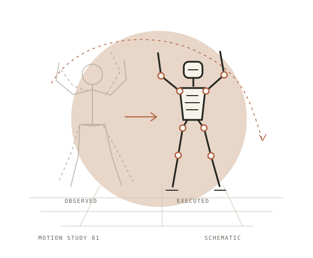
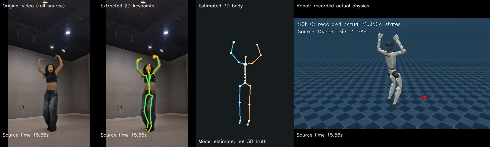
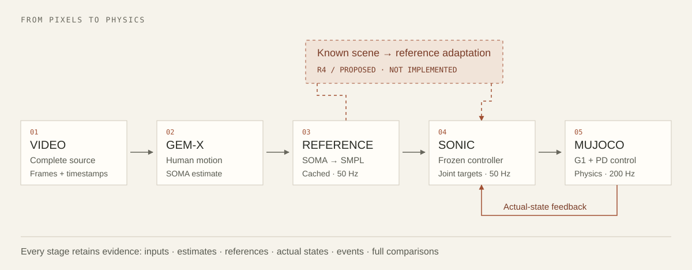

Developer preview / Simulation only
Human motion.
Robot motion.
A path between.
Turn a short video into a humanoid simulation. Inspect what the robot did, understand where it differs, and explore what comes next.

01Run a short video. Start with a single person and a clear gesture.
02Inspect every stage. Keep estimates, actual states and timing.
03Build on the evidence. Reuse caches. Compare. Explore.
01 / See what you get
One video.
The whole picture.
Original footage, estimated motion and recorded robot execution—side by side, on the same source timeline.

A full-length comparison.
The robot view replays recorded physical states. The 3D human view is an estimate.
Data behind the demo.
Motion references, actual states, stage logs and event checks stay with the run.
An honest outcome.
Reports distinguish physical stability from imitation success, including failures.
02 / Make it yours
A clear place
to start.
Explore the source today. Run your first video once the environment and assets are ready.
Manual setup · Linux / WSL baseline
Environment setupWhat needs to be ready?
Prepare the separate perception and control environments, native controller, pretrained weights, body-model assets and verified storage. Cloning supplies source only.
The accepted setup used an 8 GB RTX 4060 Laptop under WSL2. A fresh-machine rebuild is not yet verified. The original workstation is paused for Linux-server migration; its boot guard also applies to the check command.
Current migration readiness ↗Start with the source.
Git and Git LFS are required. Models, environments and full videos are prepared separately.
GIT_LFS_SKIP_SMUDGE=1 git clone --recurse-submodules \
https://github.com/LyrineYang/humanmimic.git
cd humanmimicThe repository is currently private. Use your existing GitHub access.
Choose a simple first motion.
Use a single-person video up to 60 seconds, with a fixed camera and the full body and feet visible.
source scripts/activate-r2.sh
python scripts/run-r2-video.py \
--input /absolute/path/to/clip.mp4 \
--run-id my-first-video \
--check-onlyOn a prepared, authorized target, check that active_task_pids is empty and reserved_heldout_source is false. Remove --check-only to run. This inspection alone does not verify runtime readiness.
Open the report first.
A completed pipeline saves a comparison and the data behind it under $R2_STORAGE_ROOT/runs/.
my-first-video/
├── REPORT.md
├── demo/comparison.mp4
├── extraction/
├── physical/
└── body-audit/A demo can exist while acceptance is incomplete. Motion-event annotations and final visual review are needed for a fully verified result. Understand each artifact ↗
03 / Under the surface
Connected stages.
Inspectable decisions.
Perception runs offline, then releases its models before control begins. Each boundary leaves data you can examine.

The controller drives joint targets. Gravity, contact and robot-state feedback determine what happens next.
Architecture & source map ↗04 / What we are learning
Useful tools.
Open questions.
Building the pipeline changes how we think about imitation. These notes start with observed behavior and keep the limits in view.
Upright does not mean understood.
All ten video rollouts were stable. Three still missed motion-event checks. We keep the two outcomes separate.
Small hardware rewards clear stages.
Sequential extraction, saved caches and released models made the offline workflow possible on an 8 GB GPU.
Look at the reference before the robot.
In one failed dance, missing knee amplitude was already present in the estimate. The cause remains unresolved.
05 / What works today
Progress you
can inspect.
Small engineering suites on the original workstation. Every source has an outcome, including the ones that failed.
Five motions, two trials each.
Original acceptance gate met.
Failures retained for inspection.
Explore all 10 video results
| Source ↗ | Split | Motion | Events | Outcome |
|---|---|---|---|---|
| QqvZAUEOrAQ | debug | dance | 6 / 6 | passed |
| 0EpP3pYUYTk | debug | lower body | 7 / 7 | passed |
| vTx_ldn6MCA | debug | upper body | 3 / 4 | failed |
| 6uqztDO_7kQ | debug | stepping | 0 / 6 | failed |
| 2e_7XBmpw14 | debug | dance | 5 / 5 | passed |
| ROZy7jawHf4 | heldout | trunk | 8 / 8 | passed |
| U7Nrwyu6Uqo | heldout | lower body | 6 / 6 | passed |
| gRexOgq8h-8 | heldout | dance | 6 / 6 | passed |
| dIfUVvoVXRM | heldout | dance | 5 / 5 | passed |
| GP4YqDYMmcI | heldout | dance | 5 / 6 | failed |
As of November 1, 2026. All five held-out videos are now used data; three share a creator. These results do not establish broad generalization or real-time operation. Full recordings remain on the execution machine.
Complete results & limitations ↗A place to use, understand and contribute